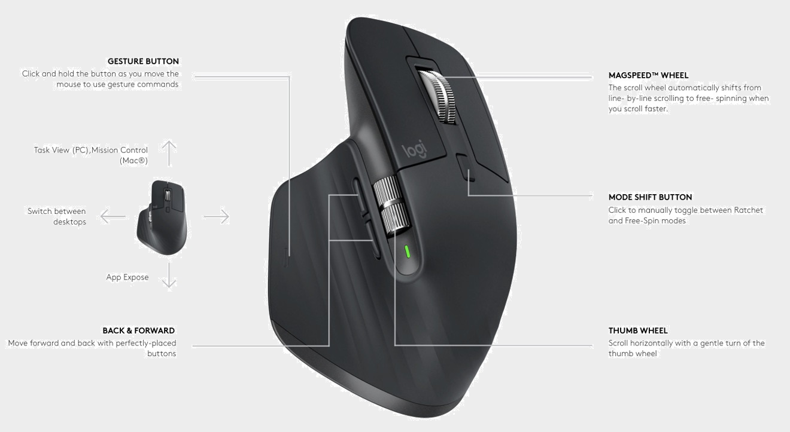

Work more productively

Designed for efficient work, programming and creativity
wireless
The MX Master 3 wireless mouse works wirelessly for up to several months. You will close the priority tasks before you need to recharge.


behind any table
Explore the landscapes of your home without being distracted from work. The MX Master 3 is compact enough to change your workplace and take your laptop to the kitchen.
5 times
more accurate than predecessors
4000
dpi sensor sensitivity

Switch surface
Thanks to Logitech Darkfield technology, the MX Master 3 works on any surface, even glass.
SIMULTANEOUSLY FROM MULTIPLE DEVICES
With Flow technology, you can work on multiple computers simultaneously, instantly switching between different operating systems — even between Windows® and macOS. For example, it is enough to copy a text, image, or file to a MacBook and move it to a Windows PC without delay.
The MX Key keyboard tracks the movement of the MX Master 3 mouse cursor, so that your text appears where you are currently working.
WITH INDIVIDUAL SETTINGS
The MX Master 3 mouse adapts to your work processes. Thanks to individual settings, you can customize buttons and gestures for almost any application you use.
Start working more productively from the moment of purchase — the device is pre-optimized for popular applications on Windows and Mac.

COMFORTABLE.
ERGONOMICALLY DESIGNED.
INTUITIVELY.
The MX Master 3 mouse is designed to accurately match the shape of your palm. But no less important are the thumb scroll wheel and the location of the gesture buttons, with which you will create with confidence like never before.
FASTER THAN EVER
The MX Master 3 computer mouse offers an ultimate scrolling mechanism with a speed of 1000 lines in 1 second. Accurate to the pixel. Noiselessly.